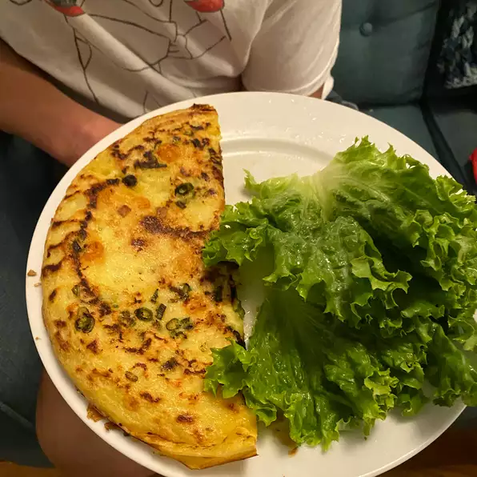

Bánh Xéo
<<<

Description:
Bánh xéo (bahn SAY-oh) is a popular street snack in Vietnam,
especially in the south. The name means "sizzling pancakes or
crepes" and refers to the sound the batter makes when it hits
the hot skillet. The shrimp-studded crepe is rolled up in a
leaf of lettuce and dipped in nuoc cham dipping sauce before it
gets popped in your mouth. Serve with fresh herbs.
Ingredient List:
Crepe Batter:
- 1 cup rice flour
- 1/2 teaspoon white sugar
- 1/2 teaspoon salt
- 1/4 teaspoon tumeric
- 1 cup coconut milk
- 1/2 cup water
Filling:
- 2 tablespoons vegetable oil, divided or as needed
- 2 tablespoons minced shallot
- 2 cloves garlic, minced, or more to taste
- 3/4 pound fresh shrimp, peeled and deveined
- 2 tablespoons fish sauce, or more to taste
- salt to taste
- 1 pound mung bean sprouts
- 4 lettuce leaves, or as needed
Directions:
-
Mix rice flour, sugar, salt, and turmeric for batter together in a large bowl.
Beat in coconut milk until thick. Slowly beat in water until batter is the
consistency of a thin crepe batter.
-
Prepare filling: Heat 1 1/2 tablespoon oil in a
large skillet over medium-high heat. Add shallot and garlic; cook and stir until
fragrant but not browning, 1 to 2 minutes. Add shrimp; sauté until cooked through
and opaque, 3 to 4 minutes. Season with fish sauce and salt. Transfer filling to
a bowl.
-
Preheat oven to 200 degrees F (95 degrees C).
-
Wipe out skillet and reheat over medium heat. Add remaining 1 1/2 teaspoon oil. Stir
crepe batter and pour 1/2 cup into the hot skillet, swirling to coat the bottom. Lay
3 or 4 of the cooked shrimp on the bottom half of the crepe. Top with a small handful
of bean sprouts. Cook until batter looks set and edges start to brown, about 1 minute.
Fold crepe over and slide onto an oven-safe plate.
-
Place crepe in the preheated oven to keep warm. Repeat Step 4 to cook remaining crepes.
-
Serve lettuce leaves alongside filled crepes. Break off pieces of crepe and roll up in
lettuce leaves to eat.
source: https://www.allrecipes.com/recipe/247054/banh-xeo-vietnamese-crepes/
<<<